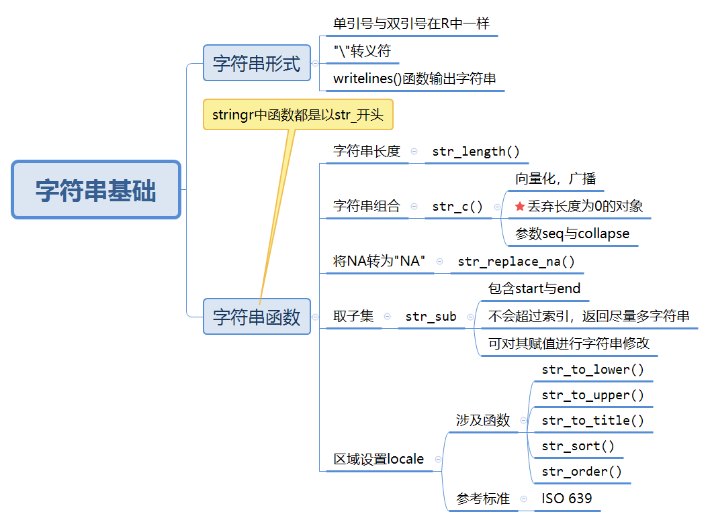
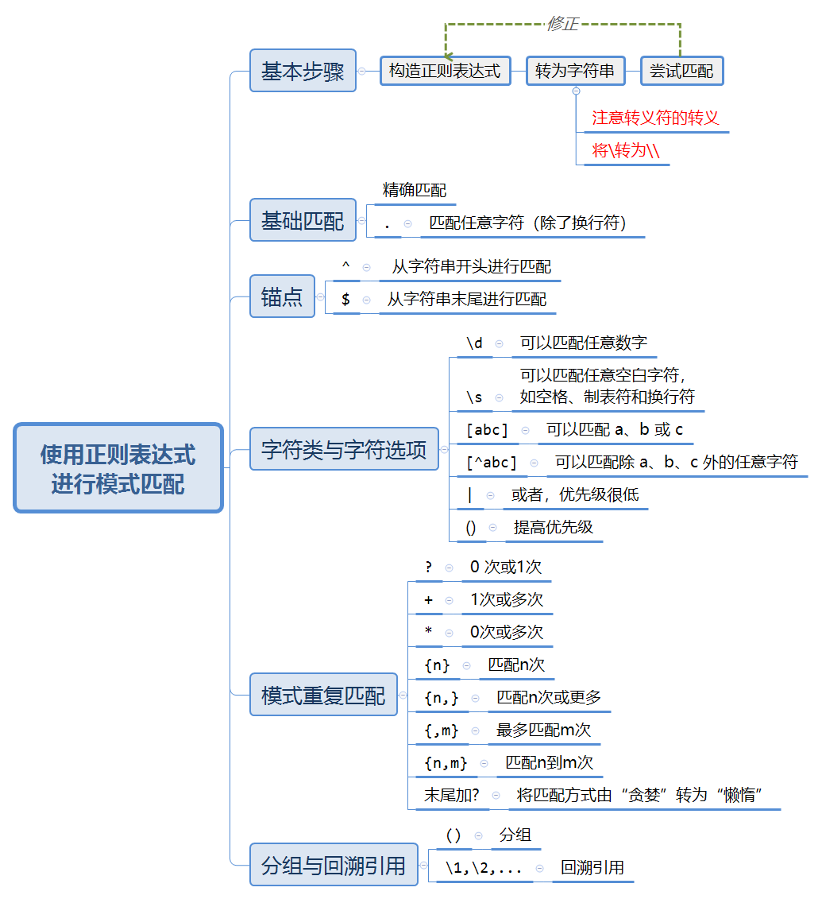
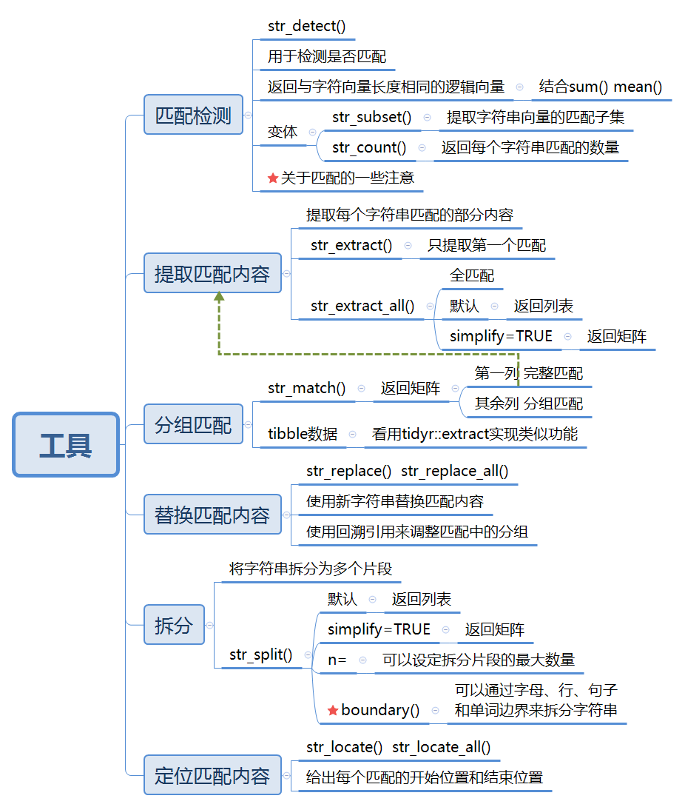
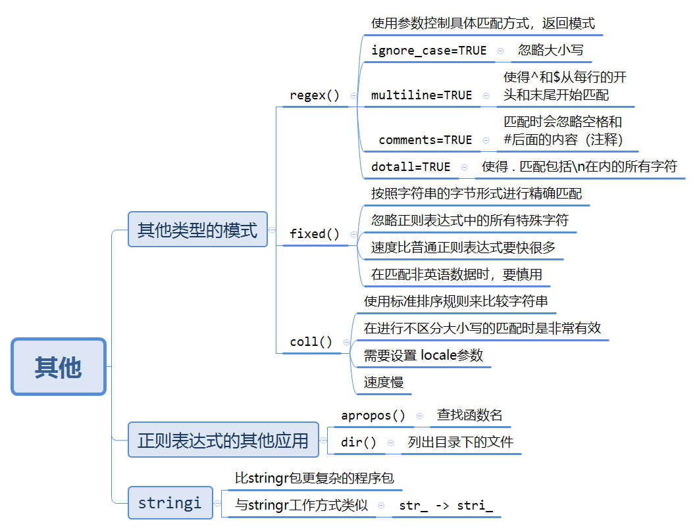

11 Strings
学习stringr包去处理字符串，主要内容是正则表达式。
11.1 字符串基础

关于丢弃长度为0的对象，稍微修改了一下原书的例子：
name <- "Hadley"
time_of_day <- "morning"
birthday <- FALSE
str_c(
"Good ", time_of_day, " ", name,
if (birthday) " and HAPPY BIRTHDAY" else "..", # 注意这里
"."
)
#> [1] "Good morning Hadley..."结合if语句使用非常好用。
11.2 使用正则表达式进行模式匹配
可以通过str_view()和str_view_all()函数来学习正则表达式
正则表达式的内容很多，下面只是简单把书上提高的内容列举一下： 
11.2.1 练习
11.2.1.1 基础匹配
（1）解释一下为什么这些字符串不能匹配一个反斜杠\："\"、"\\"、"\\\"。
匹配一个反斜杠 \ 的正则表达式为 \\ ，再转为字符串自然是"\\\\"。
而
（2）如何匹配字符序列 "'\ ？
# 先确定正则表达式为 "'\\
# 再确定字符串为 \"\'\\\\
writeLines("\"\'\\\\")
#> "'\\
# 最后验证一下
x <- "abc\"\'\\de"
writeLines(x)
#> abc"'\de
str_view(x, "\"\'\\\\")（3）正则表达式\..\..\..会匹配哪种模式？如何用字符串来表示这个正则表达式？
会匹配“.+任意字符+.+任意字符+.+任意字符”。
11.2.1.2 锚点
（1）如何匹配字符串"$^$"？
# 先确定正则表达式为 \$\^\$
# 再确定字符串
x <- "\\$\\^\\$"
writeLines(x)
#> \$\^\$
# 尝试匹配
s <- "ab$^$cd"
writeLines(s)
#> ab$^$cd
str_view(s,x)更正：之前没有考虑到全字匹配。
# 先确定正则表达式为 ^\$\^\$$
# 再确定字符串
x <- "^\\$\\^\\$$"
writeLines(x)
#> ^\$\^\$$
# 尝试匹配
str_view(c("$^$", "ab$^$sfas"), "^\\$\\^\\$$", match = TRUE)（2）给定stringr::words中的常用单词语料库，创建正则表达式以找出满足下列条件的所有单词。
# 长度正好为 3 个字符的单词。
x <- "^...$"
str_subset(stringr::words,x)
#> [1] "act" "add" "age" "ago" "air" "all" "and" "any" "arm" "art" "ask" "bad"
#> [13] "bag" "bar" "bed" "bet" "big" "bit" "box" "boy" "bus" "but" "buy" "can"
#> [25] "car" "cat" "cup" "cut" "dad" "day" "die" "dog" "dry" "due" "eat" "egg"
#> [37] "end" "eye" "far" "few" "fit" "fly" "for" "fun" "gas" "get" "god" "guy"
#> [49] "hit" "hot" "how" "job" "key" "kid" "lad" "law" "lay" "leg" "let" "lie"
#> [61] "lot" "low" "man" "may" "mrs" "new" "non" "not" "now" "odd" "off" "old"
#> [73] "one" "out" "own" "pay" "per" "put" "red" "rid" "run" "say" "see" "set"
#> [85] "sex" "she" "sir" "sit" "six" "son" "sun" "tax" "tea" "ten" "the" "tie"
#> [97] "too" "top" "try" "two" "use" "war" "way" "wee" "who" "why" "win" "yes"
#> [109] "yet" "you"# 具有 7 个或更多字符的单词
x <- "^......."
str_subset(stringr::words,x)
#> [1] "absolute" "account" "achieve" "address" "advertise"
#> [6] "afternoon" "against" "already" "alright" "although"
#> [11] "america" "another" "apparent" "appoint" "approach"
#> [16] "appropriate" "arrange" "associate" "authority" "available"
#> [21] "balance" "because" "believe" "benefit" "between"
#> [26] "brilliant" "britain" "brother" "business" "certain"
#> [31] "chairman" "character" "Christmas" "colleague" "collect"
#> [36] "college" "comment" "committee" "community" "company"
#> [41] "compare" "complete" "compute" "concern" "condition"
#> [46] "consider" "consult" "contact" "continue" "contract"
#> [51] "control" "converse" "correct" "council" "country"
#> [56] "current" "decision" "definite" "department" "describe"
#> [61] "develop" "difference" "difficult" "discuss" "district"
#> [66] "document" "economy" "educate" "electric" "encourage"
#> [71] "english" "environment" "especial" "evening" "evidence"
#> [76] "example" "exercise" "expense" "experience" "explain"
#> [81] "express" "finance" "fortune" "forward" "function"
#> [86] "further" "general" "germany" "goodbye" "history"
#> [91] "holiday" "hospital" "however" "hundred" "husband"
#> [96] "identify" "imagine" "important" "improve" "include"
#> [101] "increase" "individual" "industry" "instead" "interest"
#> [106] "introduce" "involve" "kitchen" "language" "machine"
#> [111] "meaning" "measure" "mention" "million" "minister"
#> [116] "morning" "necessary" "obvious" "occasion" "operate"
#> [121] "opportunity" "organize" "original" "otherwise" "paragraph"
#> [126] "particular" "pension" "percent" "perfect" "perhaps"
#> [131] "photograph" "picture" "politic" "position" "positive"
#> [136] "possible" "practise" "prepare" "present" "pressure"
#> [141] "presume" "previous" "private" "probable" "problem"
#> [146] "proceed" "process" "produce" "product" "programme"
#> [151] "project" "propose" "protect" "provide" "purpose"
#> [156] "quality" "quarter" "question" "realise" "receive"
#> [161] "recognize" "recommend" "relation" "remember" "represent"
#> [166] "require" "research" "resource" "respect" "responsible"
#> [171] "saturday" "science" "scotland" "secretary" "section"
#> [176] "separate" "serious" "service" "similar" "situate"
#> [181] "society" "special" "specific" "standard" "station"
#> [186] "straight" "strategy" "structure" "student" "subject"
#> [191] "succeed" "suggest" "support" "suppose" "surprise"
#> [196] "telephone" "television" "terrible" "therefore" "thirteen"
#> [201] "thousand" "through" "thursday" "together" "tomorrow"
#> [206] "tonight" "traffic" "transport" "trouble" "tuesday"
#> [211] "understand" "university" "various" "village" "wednesday"
#> [216] "welcome" "whether" "without" "yesterday"11.2.1.3 字符类与字符选项
（1）创建正则表达式来找出符合以下条件的所有单词。
# 以元音字母开头的单词
x <- "^[aeiou]"
# str_view(stringr::words,x,match = T)
# 参考答案，结果太多，使用str_subset
str_subset(stringr::words,x)
#> [1] "a" "able" "about" "absolute" "accept"
#> [6] "account" "achieve" "across" "act" "active"
#> [11] "actual" "add" "address" "admit" "advertise"
#> [16] "affect" "afford" "after" "afternoon" "again"
#> [21] "against" "age" "agent" "ago" "agree"
#> [26] "air" "all" "allow" "almost" "along"
#> [31] "already" "alright" "also" "although" "always"
#> [36] "america" "amount" "and" "another" "answer"
#> [41] "any" "apart" "apparent" "appear" "apply"
#> [46] "appoint" "approach" "appropriate" "area" "argue"
#> [51] "arm" "around" "arrange" "art" "as"
#> [56] "ask" "associate" "assume" "at" "attend"
#> [61] "authority" "available" "aware" "away" "awful"
#> [66] "each" "early" "east" "easy" "eat"
#> [71] "economy" "educate" "effect" "egg" "eight"
#> [76] "either" "elect" "electric" "eleven" "else"
#> [81] "employ" "encourage" "end" "engine" "english"
#> [86] "enjoy" "enough" "enter" "environment" "equal"
#> [91] "especial" "europe" "even" "evening" "ever"
#> [96] "every" "evidence" "exact" "example" "except"
#> [101] "excuse" "exercise" "exist" "expect" "expense"
#> [106] "experience" "explain" "express" "extra" "eye"
#> [111] "idea" "identify" "if" "imagine" "important"
#> [116] "improve" "in" "include" "income" "increase"
#> [121] "indeed" "individual" "industry" "inform" "inside"
#> [126] "instead" "insure" "interest" "into" "introduce"
#> [131] "invest" "involve" "issue" "it" "item"
#> [136] "obvious" "occasion" "odd" "of" "off"
#> [141] "offer" "office" "often" "okay" "old"
#> [146] "on" "once" "one" "only" "open"
#> [151] "operate" "opportunity" "oppose" "or" "order"
#> [156] "organize" "original" "other" "otherwise" "ought"
#> [161] "out" "over" "own" "under" "understand"
#> [166] "union" "unit" "unite" "university" "unless"
#> [171] "until" "up" "upon" "use" "usual"（2）实际验证一下规则：i 总是在 e 前面，除非 i 前面有 c。
那就假设它们是挨在一起的了。
（3）q 后面总是跟着一个 u 吗？
在这个数据集中的确是这样子的。
11.2.1.4 重复
（3）创建正则表达式来找出满足以下条件的所有单词。
# 以 3 个辅音字母开头的单词
x <- "^[^aeiou]{3}"
str_subset(stringr::words,x)
#> [1] "Christ" "Christmas" "dry" "fly" "mrs" "scheme"
#> [7] "school" "straight" "strategy" "street" "strike" "strong"
#> [13] "structure" "system" "three" "through" "throw" "try"
#> [19] "type" "why"# 有连续 3 个或更多元音字母的单词
x <- "[aeiou]{3,}"
str_subset(stringr::words,x)
#> [1] "beauty" "obvious" "previous" "quiet" "serious" "various"# 有连续 2 个或更多元音—辅音配对的单词
x <- "([aeiou][^aeiou]){2,}"
str_subset(stringr::words,x)
#> [1] "absolute" "agent" "along" "america" "another"
#> [6] "apart" "apparent" "authority" "available" "aware"
#> [11] "away" "balance" "basis" "become" "before"
#> [16] "begin" "behind" "benefit" "business" "character"
#> [21] "closes" "community" "consider" "cover" "debate"
#> [26] "decide" "decision" "definite" "department" "depend"
#> [31] "design" "develop" "difference" "difficult" "direct"
#> [36] "divide" "document" "during" "economy" "educate"
#> [41] "elect" "electric" "eleven" "encourage" "environment"
#> [46] "europe" "even" "evening" "ever" "every"
#> [51] "evidence" "exact" "example" "exercise" "exist"
#> [56] "family" "figure" "final" "finance" "finish"
#> [61] "friday" "future" "general" "govern" "holiday"
#> [66] "honest" "hospital" "however" "identify" "imagine"
#> [71] "individual" "interest" "introduce" "item" "jesus"
#> [76] "level" "likely" "limit" "local" "major"
#> [81] "manage" "meaning" "measure" "minister" "minus"
#> [86] "minute" "moment" "money" "music" "nature"
#> [91] "necessary" "never" "notice" "okay" "open"
#> [96] "operate" "opportunity" "organize" "original" "over"
#> [101] "paper" "paragraph" "parent" "particular" "photograph"
#> [106] "police" "policy" "politic" "position" "positive"
#> [111] "power" "prepare" "present" "presume" "private"
#> [116] "probable" "process" "produce" "product" "project"
#> [121] "proper" "propose" "protect" "provide" "quality"
#> [126] "realise" "reason" "recent" "recognize" "recommend"
#> [131] "record" "reduce" "refer" "regard" "relation"
#> [136] "remember" "report" "represent" "result" "return"
#> [141] "saturday" "second" "secretary" "secure" "separate"
#> [146] "seven" "similar" "specific" "strategy" "student"
#> [151] "stupid" "telephone" "television" "therefore" "thousand"
#> [156] "today" "together" "tomorrow" "tonight" "total"
#> [161] "toward" "travel" "unit" "unite" "university"
#> [166] "upon" "visit" "water" "woman"11.2.1.5 分组与回溯引用
（2）创建正则表达式来匹配出以下单词。
# 开头字母和结尾字母相同的单词
x <- "^(.).*\\1$"
str_subset(stringr::words,x)
#> [1] "america" "area" "dad" "dead" "depend"
#> [6] "educate" "else" "encourage" "engine" "europe"
#> [11] "evidence" "example" "excuse" "exercise" "expense"
#> [16] "experience" "eye" "health" "high" "knock"
#> [21] "level" "local" "nation" "non" "rather"
#> [26] "refer" "remember" "serious" "stairs" "test"
#> [31] "tonight" "transport" "treat" "trust" "window"
#> [36] "yesterday"
# 更正：忽略只有一个字母的字符串
x <- "^(.)((.*\\1$)|$)"
str_subset(stringr::words,x)
#> [1] "a" "america" "area" "dad" "dead"
#> [6] "depend" "educate" "else" "encourage" "engine"
#> [11] "europe" "evidence" "example" "excuse" "exercise"
#> [16] "expense" "experience" "eye" "health" "high"
#> [21] "knock" "level" "local" "nation" "non"
#> [26] "rather" "refer" "remember" "serious" "stairs"
#> [31] "test" "tonight" "transport" "treat" "trust"
#> [36] "window" "yesterday"# 包含一对重复字母的单词（例如，church 中包含了重复的 ch）。
# 严谨一点，用[A-Za-z]代替.
x <- "(..).*\\1"
str_subset(stringr::words,x)
#> [1] "appropriate" "church" "condition" "decide" "environment"
#> [6] "london" "paragraph" "particular" "photograph" "prepare"
#> [11] "pressure" "remember" "represent" "require" "sense"
#> [16] "therefore" "understand" "whether"# 包含一个至少重复 3 次的字母的单词（例如，eleven 中的 e 重复了 3 次）
# 严谨一点，用[A-Za-z]代替.
x <- "(.).*\\1.*\\1"
str_subset(stringr::words,x)
#> [1] "appropriate" "available" "believe" "between" "business"
#> [6] "degree" "difference" "discuss" "eleven" "environment"
#> [11] "evidence" "exercise" "expense" "experience" "individual"
#> [16] "paragraph" "receive" "remember" "represent" "telephone"
#> [21] "therefore" "tomorrow"11.3 工具
利用正则匹配来解决实际问题
11.3.1 导图

11.3.2 关于匹配的一些注意
如果正则表达式过于复杂，则应该将其分解为几个更小的子表达式，将每个子表达式的匹配结果赋给一个变量，并使用逻辑运算组合起来。
匹配从来不会重叠。
很多
stringr函数都是成对出现的：一个函数用于单个匹配，另一个函数用于全部匹配，后者会有后缀_all。
11.3.3 boundary()
boundary()可以通过字母(character)、行(line_break)、句子(sentence)和单词(word)边界来拆分字符串。
比如
str_split(x,boundary("word"))
#> [[1]]
#> [1] "This" "is" "a" "sentence" "This" "is" "another"
#> [8] "sentence"11.3.3.1 疑问
有一点不太明白，boundary("word)如果是用于匹配词，那么再使用str_split拆分，剩下的不应该是“非词”部分吗？比如是用空格拆分，返回非空格部分：
str_split(x," ")
#> [[1]]
#> [1] "This" "is" "a" "sentence." "This" "is"
#> [7] "another" "sentence."但你要说它不是匹配词，用str_extract_all()函数却可以得到拆分结果：
str_extract_all(x,boundary("word"))
#> [[1]]
#> [1] "This" "is" "a" "sentence" "This" "is" "another"
#> [8] "sentence"可能这个函数重载了？挖个坑…
11.4 其他
